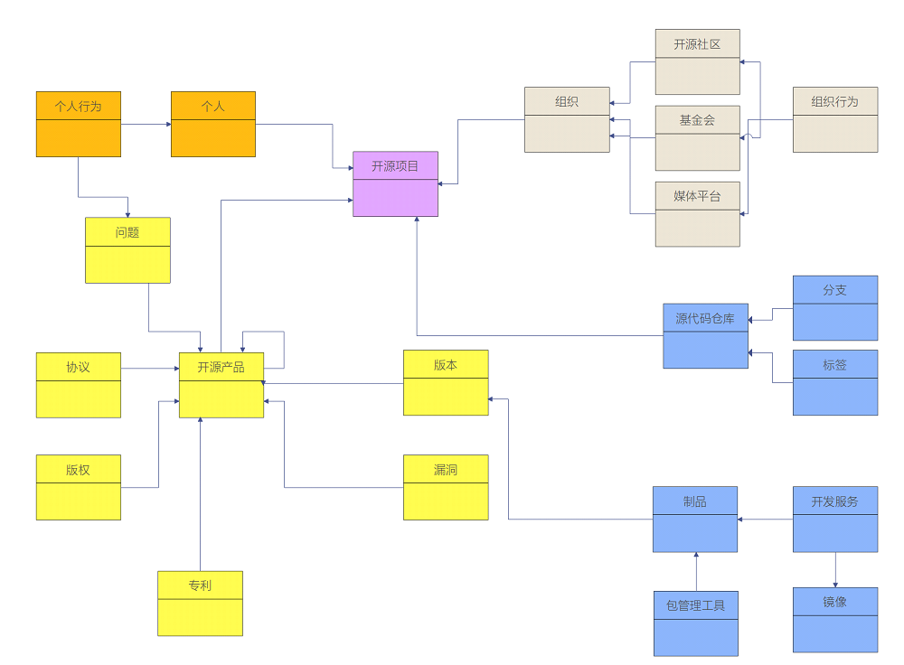

开源定义与相关概念
自由软件的简单历史
- 1983 年，理查德·斯托曼 发起了 GNU 计划以编写一可以不受限制使用源代码的操作系统。
- 1985 年，理查德·斯托曼发布了 GNU 宣言。
- 1986 年，为了推广《自由软件定义》，他创建了自由软件基金会。
- 1989 年，该基金会发布了第一版的 GNU 通用公共许可证 （GPLv1），并在 1991 年发布了进行了少量更新的第二版。
自由软件的定义
粗略来讲，一个软件如果是自由软件，这意味着用户可以自由地运行，拷贝，分发，学习，修改并改进该软件。因此，“自由软件”是关乎自由的问题，与价格无关。要理解这个概念，你要按照 Free Software 中的“Free”是指“自由言论（free speech）”中的自由，而非“免费午餐（free lunch）”的免费这一意项。为避免歧义，在使用英文时，我们也会借用法语或西班牙语的“Libre Software”来指自由软件，这样可以明确表示我们说得不是免费。
四项基本自由
如果一个软件是自由软件，那么它必须为用户提供以下四项基本自由
- 自由度 0：无论用户出于何种目的，必须可以按照用户意愿，自由地运行该软件。
- 自由度 1：用户可以自由地学习并修改该软件，以此来帮助用户完成用户自己的计算。作为前提，用户必须可以访问到该软件的源代码。
- 自由度 2：用户可以自由地分发该软件的拷贝，这样就可以助人。
- 自由度 3：用户可以自由地分发该软件修改后的拷贝。借此，用户可以把改进后的软件分享给整个社区令他人也从中受益。作为前提，用户必须可以访问到该软件的源代码。
参考： https://www.gnu.org/philosophy/free-sw.html
OSD 的那 10 条原则是怎么来的？
- 1985年3月：GNU宣言
- 1989年2月25日：GPL
- 1991年9月：Linux内核
- 1993年9月15日：Debian发行版
- 1994年11月3日：RedHat
- 1997年7月5日：Debian社会契约
- 1997年7月：Debian Free Software Guidelines
- 1997年7~8月：Open Source Definition
- 1998年2月：OSI成立
- 2000年，发布OSD相关注释
- 目前的OSD 1.9，是2007年3月22日修订的
开源定义（Open Source Definition）
- 自由再分发 许可证不应该限制其他方出售或者分发该软件，当该软件作为包含多个不同源码程序的集成软件的一部分。许可证不应该要求专利费或其他销售费用。
- 源代码 程序必须包含源代码，需要有完整的源代码和可编译的形式。程序的某一部分如果不是来自这份源代码，那必须有一个不需要费时费财的公共方式获得源代码或者从网络上下载过来。源代码需要以易修改的形式呈现。不能故意模糊源代码，也不能只发布预处理器或编译器的输出文件。
- 衍生作业 许可证必须允许修改和衍生作业，需要像原来的许可证那样发布。
- 作者源代码的完整性 仅当许可证允许使用源代码分发“补丁文件”以便在构建时修改程序时，许可证才可以限制源代码以修改的形式分发。 许可证必须明确允许分发由修改后的源代码构建的软件。许可证可能要求派生作品带有与原始软件不同的名称或版本号。
- 不歧视个人或团体 许可证不能歧视任何个人或团体。
- 不歧视领域 许可证不能限制任何人将程序用在某个特定的领域。例如，不能要求人们不可以把程序用在商业领域或者基因研究。
开源定义（Open Source Definition）
- 许可证的分发 该程序所附带的权利必须适用于该程序再分配的所有人，而无需由分配方执行额外的许可。
- 许可证不能对一个产品特化 附加到程序的权利不得取决于程序是特定软件分发的一部分。如果程序是从该分发中提取并在程序许可的条款中使用或分发的，则程序重新分发的所有各方应具有与原始软件分发相同的权限。
- 许可证不能限制其他软件 许可证不得对与许可软件一起分发的其他软件施加限制。例如，许可证不得坚持在同一介质上分发的所有其他程序必须是开源软件。
- 许可证必须是技术中立的 许可证的提供不得基于任何单独的技术或界面风格。
开源定义存在的问题
Open source doesn't just mean access to the source code. The distribution terms of open-source software must comply with the following criteria:
- OSD 的本质，是定义了开源软件的授权协议的主要特征。并非定义了开源本身。
- 对于新出现的开源硬件，开源文档，开放数据等新的形式，并无涉及。
- 自由软件与开源软件的关系，也长期存在尚未解决的分歧。
- 至于开源软件、开源硬件、开源社区、开源产品、开源基金会等等概念，也一直没有明确、无歧义、相互之间协调一致的概念定义。
正在探索中的“开源定义”
开源是一种在软硬件开发、数据与信息共享中广泛采用的开放式协作模式，协作的产出物应该符合开源许可证条款的要求。
- 突出开放式协作
- 目标是创作数字化作品
- 四大要素：制定开放规则，依赖基础设施，广泛吸引参与主体，最终创作出目标对象
开源四大要素
- 开源规则 开源规则包括但不限于开源许可证、开源硬件设计规范、开源知识产权、开源治理框架和应用评价体系等。
- 开源基础设施 开源基础设施包括但不限于开源托管平台、网站、论坛、邮件列表、即时通讯工具、会议工具等。
- 参与主体 开源参与主体包括但不限于贡献者（个人/企业）/使用者（最终用户）/运营者（组织者/管理者）/合作者（法律/监管）。
- 开源对象（内容/目标） 开源对象包括但不限于软件、硬件、数据等。
其他需要定义的术语
- 开源技术
- 开源项目
- 开源社区
- 开源许可证
- 开源基金会
- 开源作品
- 衍生作品
- ......
还需要定义这些术语之间的关系
一个开源社区，可以开发多款开源作品。一个开源作品可以是一个开源软件，也可以是一个开源硬件。每一个开源作品可以有多个版本。每一个版本，可以有源代码、二进制包等多种发布形态。
